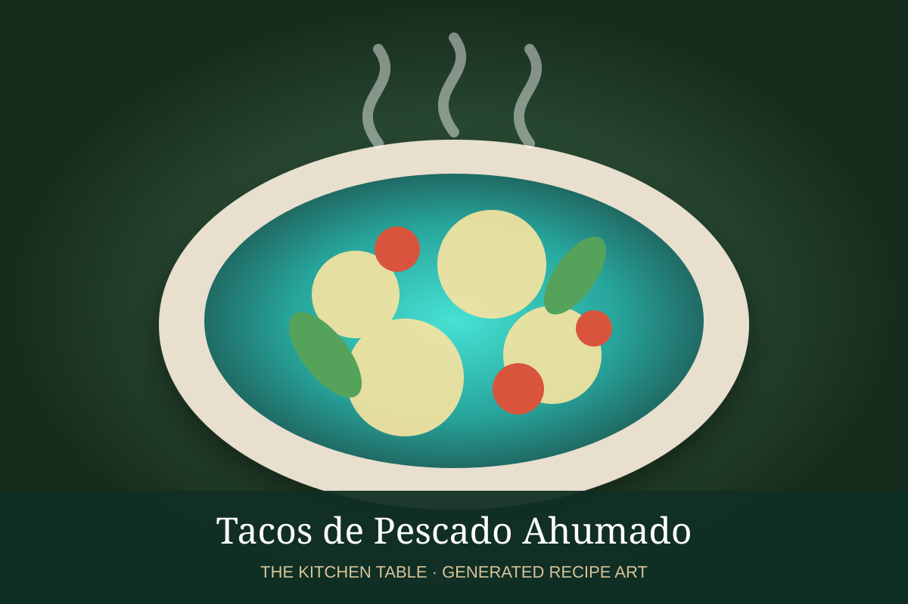

← Back to all recipes
SEAFOOD · MEXICAN
Tacos de Pescado Ahumado
Smoked fish warmed with onion, tomato, chile, and lime, then served with avocado and fresh salsa.
25 minMakes 10 tacos

Photo: Nutrium
Ingredients
- 1 1/2 lb smoked white fish, flaked
- 1 tbsp olive oil
- 1/2 onion, diced
- 2 Roma tomatoes, diced
- 1 serrano chile, minced
- Juice of 1 lime
- 10 corn tortillas
- Avocado
- Pico de gallo
- Cilantro
Preparation
- Cook onion and serrano in olive oil until soft.
- Add tomato and cook until juicy.
- Fold in smoked fish and heat gently.
- Finish with lime juice.
- Serve in tortillas with avocado, pico de gallo, and cilantro.